- Semestre 5 · Clase 11
- Raycast · lo construimos desde cero
Programación para Videojuegos
Hoy
Parte 1 · La torreta Parte 2 · Un enemigo que ve y recibe golpes
Parte 3 · Disparar en primera persona
Paso 1 · Las carpetas
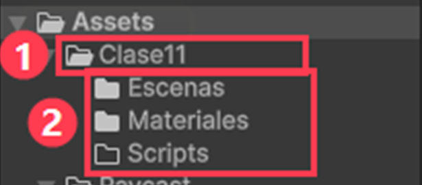
Project: clic derecho en Assets, Create > Folder.
Clase11 y dentro Escenas, Materiales y Scripts
Clase11 y dentro Escenas, Materiales y Scripts
Paso 2 · El piso
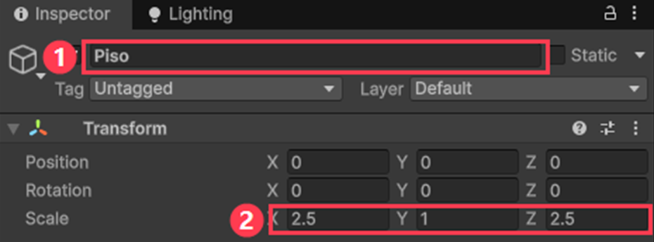
GameObject > 3D Object > Plane. Nombre: Piso.
Position 0, 0, 0 · Scale 2.5, 1, 2.5
Position 0, 0, 0 · Scale 2.5, 1, 2.5
Paso 3 · Un cubo
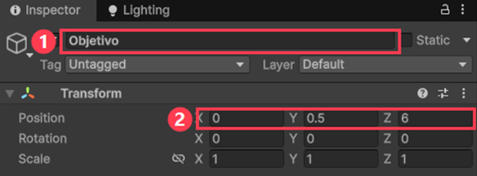
GameObject > 3D Object > Cube. Nombre: Objetivo.
Position 0, 0.5, 6
Position 0, 0.5, 6
Paso 4 · La torreta (1 de 6)
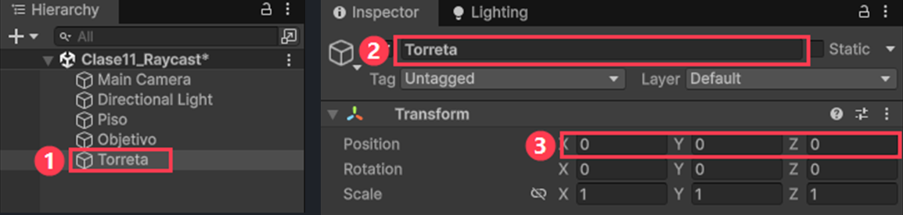
GameObject > Create Empty. Nombre: Torreta.
Position 0, 0, 0. Es solo una caja para agrupar
Position 0, 0, 0. Es solo una caja para agrupar
Paso 4 · La torreta (2 de 6)
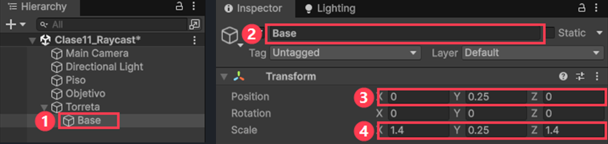
Clic derecho sobre Torreta: 3D Object > Cylinder. Nombre: Base.
Position 0, 0.25, 0 · Scale 1.4, 0.25, 1.4
Position 0, 0.25, 0 · Scale 1.4, 0.25, 1.4
Paso 4 · La torreta (3 de 6)
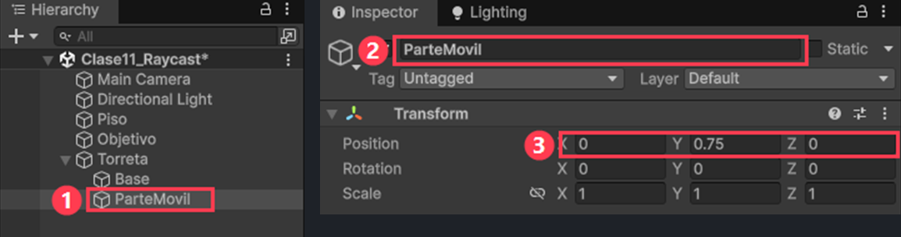
Clic derecho sobre Torreta: Create Empty. Nombre: ParteMovil.
Position 0, 0.75, 0. Esta es la que va a girar
Position 0, 0.75, 0. Esta es la que va a girar
Paso 4 · La torreta (4 de 6)
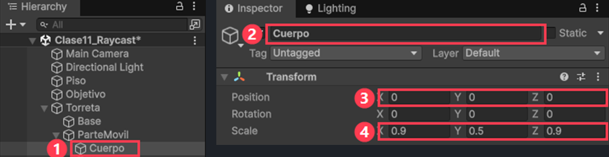
Clic derecho sobre ParteMovil: 3D Object > Cube. Nombre: Cuerpo.
Position 0, 0, 0 · Scale 0.9, 0.5, 0.9
Position 0, 0, 0 · Scale 0.9, 0.5, 0.9
Paso 4 · La torreta (5 de 6)
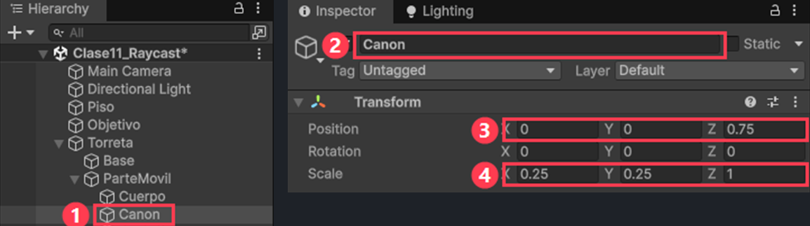
Clic derecho sobre ParteMovil: 3D Object > Cube. Nombre: Canon (sin ñ).
Position 0, 0, 0.75 · Scale 0.25, 0.25, 1
Position 0, 0, 0.75 · Scale 0.25, 0.25, 1
Paso 4 · La torreta (6 de 6)
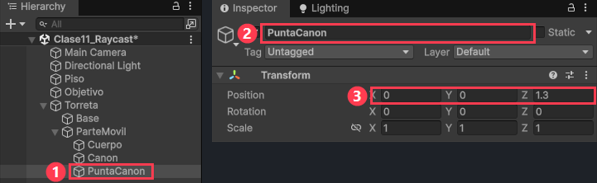
Clic derecho sobre ParteMovil: Create Empty. Nombre: PuntaCanon.
Position 0, 0, 1.3. De aquí va a salir el rayo
Position 0, 0, 1.3. De aquí va a salir el rayo
Paso 5 · Quitar los colliders
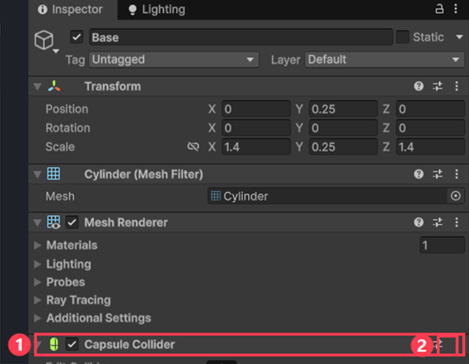
En Base, Cuerpo y Canon:
⋮ > Remove Component en su collider
⋮ > Remove Component en su collider
Paso 6 · Los colores (1 de 2)
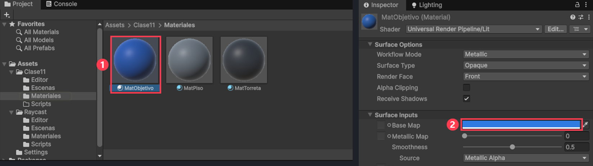
Materiales: Create > Material. Tres:
MatObjetivo color 2F7BE0 · MatPiso 8E9AA6 · MatTorreta 3A3F47
MatObjetivo color 2F7BE0 · MatPiso 8E9AA6 · MatTorreta 3A3F47
Paso 6 · Los colores (2 de 2)
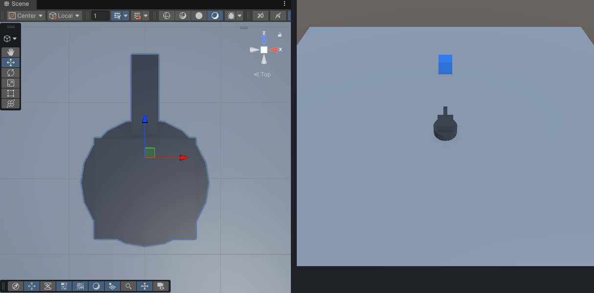
Arrastren cada material a su objeto:
MatPiso al Piso · MatTorreta a Base, Cuerpo y Canon · MatObjetivo al Objetivo
MatPiso al Piso · MatTorreta a Base, Cuerpo y Canon · MatObjetivo al Objetivo
Paso 7 · Un script
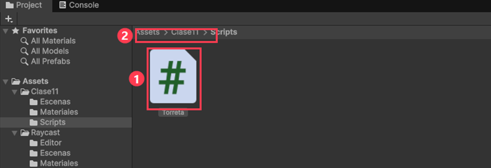
Scripts: clic derecho, Create > MonoBehaviour Script.
Nombre: Torreta. Doble clic para abrirlo
Nombre: Torreta. Doble clic para abrirlo
Paso 7 · El giro
using UnityEngine;
public class Torreta : MonoBehaviour
{
public float velocidad = 25f;
void Update()
{
transform.Rotate(0f, velocidad * Time.deltaTime, 0f);
}
}Guarden y vuelvan a Unity: esperen a que compile
Paso 7 · Ponerlo en ParteMovil
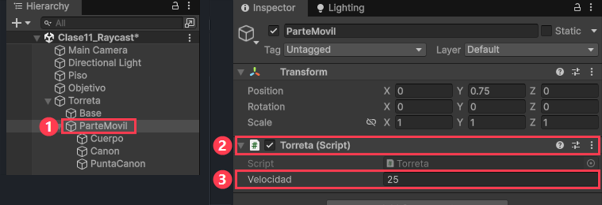
Arrastren el script sobre ParteMovil.
Play: la torreta gira
Play: la torreta gira
Paso 8 · El rayo
using UnityEngine;
public class Torreta : MonoBehaviour
{
public float velocidad = 25f;
public Transform puntaCanon;
void Update()
{
transform.Rotate(0f, velocidad * Time.deltaTime, 0f);
Ray rayo = new Ray(puntaCanon.position, puntaCanon.forward);
}
}Un rayo es un origen y una dirección
Paso 8 · Conectar la punta
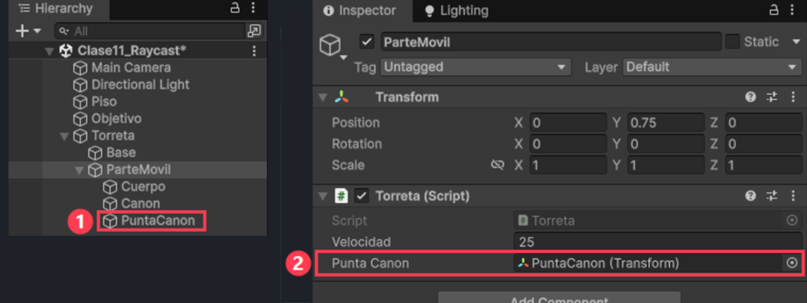
Arrastren PuntaCanon al campo Punta Canon
Paso 8 · Dibujar el rayo
Ray rayo = new Ray(puntaCanon.position, puntaCanon.forward);
Debug.DrawRay(rayo.origin, rayo.direction * 10f, Color.red);Dentro de Update, debajo del rayo.
Play y miren la pestaña Scene
Play y miren la pestaña Scene
Paso 8 · Dibujar con Gizmos
void OnDrawGizmos()
{
if (puntaCanon == null)
{
return;
}
Gizmos.color = Color.yellow;
Gizmos.DrawRay(puntaCanon.position + puntaCanon.right * 0.3f, puntaCanon.forward * 10f);
}Debajo de Update, dentro de la clase.
Se dibuja 0.3 a la derecha para no tapar al DrawRay
Se dibuja 0.3 a la derecha para no tapar al DrawRay
Paso 8 · La línea amarilla
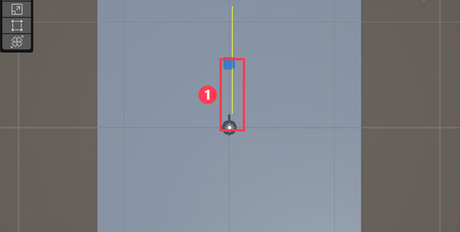
Sin dar Play ya se ve la línea amarilla en Scene
Ojo
DrawRay y Gizmos solo dibujan una línea para que la veamos. El rayo funciona igual sin la línea
Paso 9 · ¿Pegó o no?
bool pego = Physics.Raycast(rayo);
if (pego == true)
{
Debug.Log("El rayo pegó");
}Al final de Update, debajo del DrawRay
Paso 9 · Probarlo
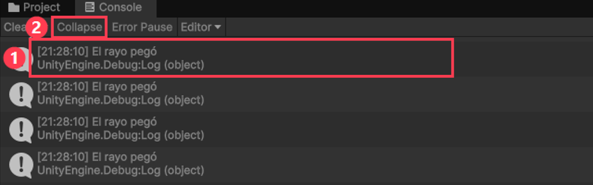
Play y pestaña Console: sale El rayo pegó cuando el rayo cruza el cubo.
Collapse junta los repetidos. Si no sale: ¿Punta Canon conectado?
Collapse junta los repetidos. Si no sale: ¿Punta Canon conectado?
Paso 9 · La línea cambia de color
bool pego = Physics.Raycast(rayo);
if (pego == true)
{
Debug.DrawRay(rayo.origin, rayo.direction * 10f, Color.green);
}
else
{
Debug.DrawRay(rayo.origin, rayo.direction * 10f, Color.red);
}Borren el DrawRay rojo y el Debug.Log de antes
Paso 9 · Verde si pega, roja si no
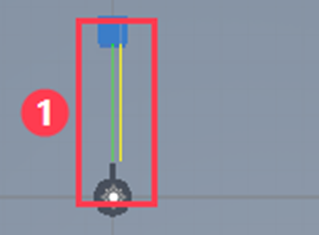
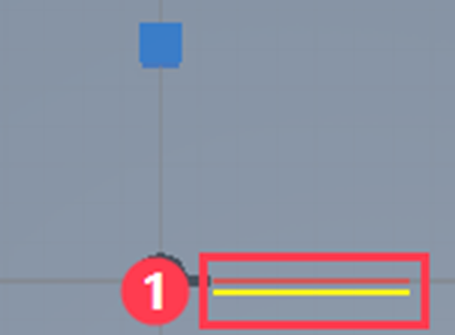
Play, pestaña Scene: verde si pega, roja si no.
La amarilla es la de Gizmos
La amarilla es la de Gizmos
Paso 10 · El hit (1 de 3)
public string nombre;
public float distancia;
public Vector3 punto;Arriba, junto a las otras variables
Paso 10 · El hit (2 de 3)
RaycastHit hit;
bool pego = Physics.Raycast(rayo, out hit);
if (pego == true)
{
nombre = hit.collider.name;
distancia = hit.distance;
punto = hit.point;
Debug.DrawRay(rayo.origin, rayo.direction * hit.distance, Color.green);
}
else
{
nombre = "";
distancia = 0f;
punto = Vector3.zero;
Debug.DrawRay(rayo.origin, rayo.direction * 10f, Color.red);
}Reemplaza el bloque anterior, dentro de Update
Paso 10 · El hit (3 de 3)
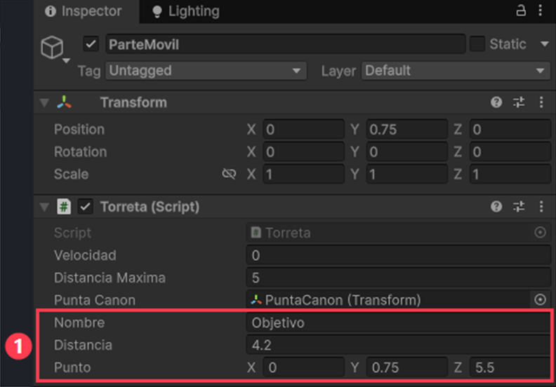
Play y seleccionen ParteMovil: Nombre, Distancia y Punto se llenan solos.
Apuntando al cubo: Objetivo · 4.2 · 0, 0.75, 5.5
Apuntando al cubo: Objetivo · 4.2 · 0, 0.75, 5.5
hit.collider el collider que tocó, y con él, el objeto
hit.distance cuánto hay del origen al golpe
hit.point el punto exacto donde pegó
hit.normal hacia dónde mira la superficie
Paso 11 · Distancia máxima
// 1) Arriba, con las otras variables
public float distanciaMaxima = 5f;
// 2) En Update
bool pego = Physics.Raycast(rayo, out hit, distanciaMaxima);
// 3) En el else: el rayo rojo mide lo mismo
Debug.DrawRay(rayo.origin, rayo.direction * distanciaMaxima, Color.red);
// 4) En OnDrawGizmos
Gizmos.DrawRay(puntaCanon.position + puntaCanon.right * 0.3f, puntaCanon.forward * distanciaMaxima);Paso 11 · Probar la distancia
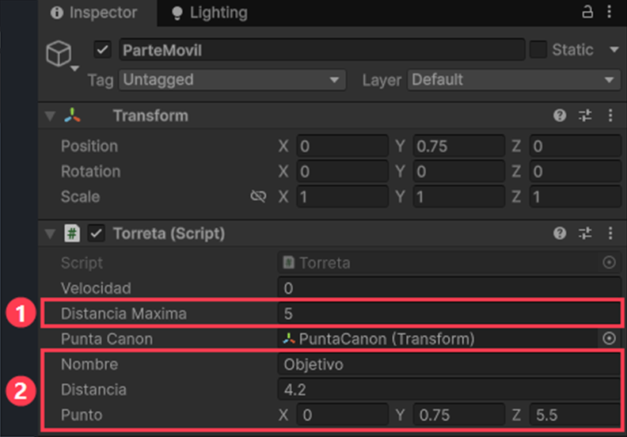
Play y cambien Distancia Maxima en el Inspector:
con 5 ve el cubo (está a 4.2); con 4 ya no
con 5 ve el cubo (está a 4.2); con 4 ya no
Paso 12 · Más cubos
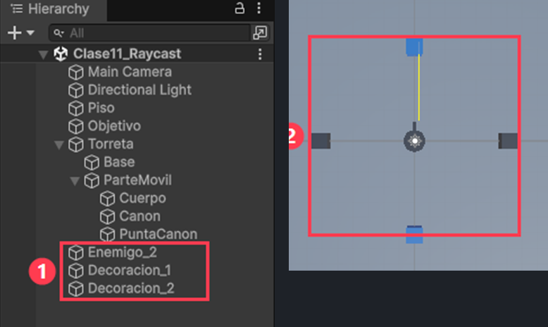
Ctrl+D sobre Objetivo, tres copias: Enemigo_2 0, 0.5, -6 · Decoracion_1 6, 0.5, 0 · Decoracion_2 -6, 0.5, 0.
Material: MatObjetivo a los enemigos, MatTorreta a la decoración
Material: MatObjetivo a los enemigos, MatTorreta a la decoración
Paso 13 · Las capas (1 de 5)
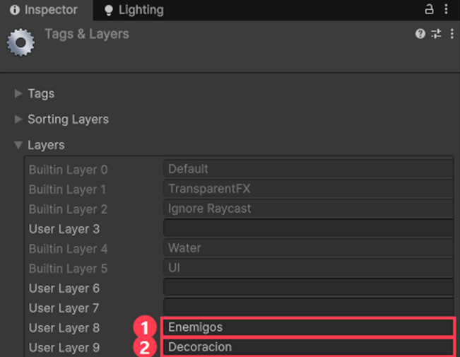
Inspector: Layer > Add Layer…
User Layer 8: Enemigos · User Layer 9: Decoracion
User Layer 8: Enemigos · User Layer 9: Decoracion
Paso 13 · Las capas (2 de 5)
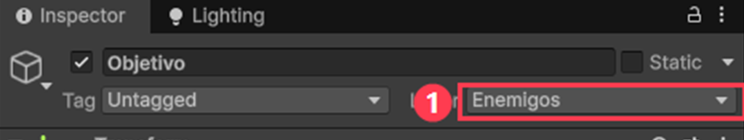
Campo Layer de cada cubo:
Enemigos para Objetivo y Enemigo_2 · Decoracion para los dos Decoracion
Enemigos para Objetivo y Enemigo_2 · Decoracion para los dos Decoracion
Paso 13 · Las capas (3 de 5)
// 1) Arriba, con las otras variables
public LayerMask capas;
// 2) En Update
bool pego = Physics.Raycast(rayo, out hit, distanciaMaxima, capas);Dos cambios en el mismo script
Paso 13 · Las capas (4 de 5)
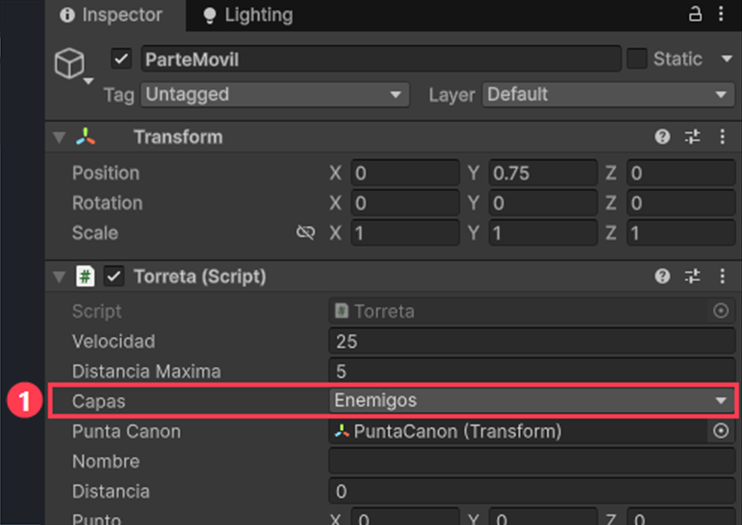
En ParteMovil, campo Capas:
marquen solo Enemigos
marquen solo Enemigos
Paso 13 · Las capas (5 de 5)
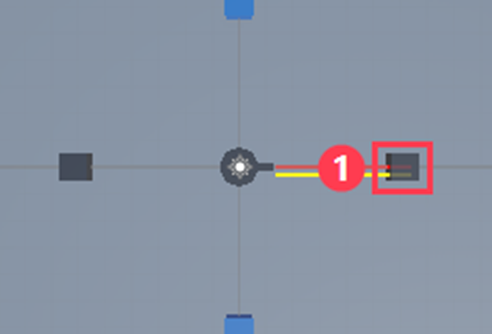
Play: los cubos de Decoracion no los ve.
La línea sigue roja aunque los cruce
La línea sigue roja aunque los cruce
Paso 14 · Una zona trigger
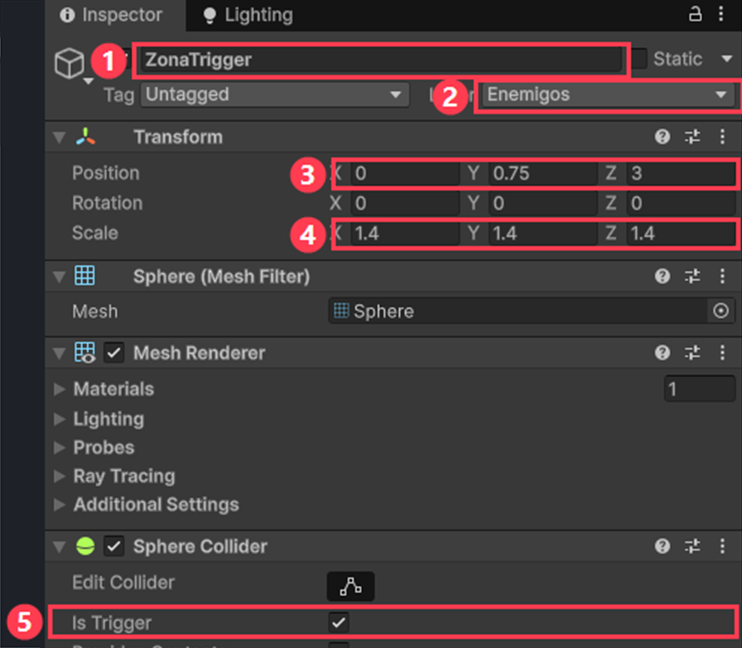
3D Object > Sphere. Nombre ZonaTrigger, Position 0, 0.75, 3, Scale 1.4,
Layer Enemigos y en Sphere Collider: Is Trigger
Layer Enemigos y en Sphere Collider: Is Trigger
Paso 14 · Triggers en el código
// 1) Arriba, con las otras variables
public QueryTriggerInteraction triggers = QueryTriggerInteraction.Collide;
// 2) En Update
bool pego = Physics.Raycast(rayo, out hit, distanciaMaxima, capas, triggers);Dos cambios más en el mismo script
Paso 14 · Collide o Ignore
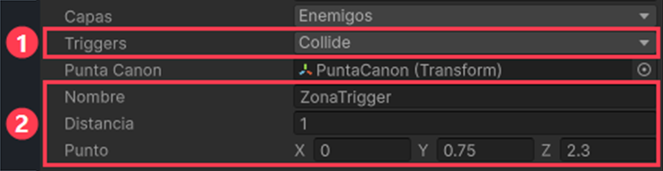
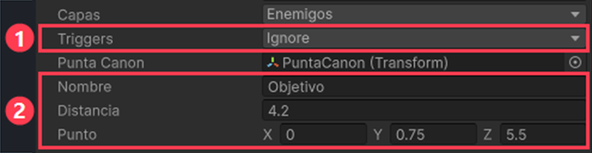
Play y cambien Triggers:
Collide se detiene en la zona · Ignore la atraviesa
Collide se detiene en la zona · Ignore la atraviesa
Paso 15 · Una fila de cubos
Ctrl+D sobre Objetivo, dos copias:
Fila_1 0, 0.5, 9 · Fila_2 0, 0.5, 12
Fila_1 0, 0.5, 9 · Fila_2 0, 0.5, 12
Capa Enemigos y material MatObjetivo, como el Objetivo
Paso 15 · RaycastAll (1 de 5)
public int cuantos;
public string[] nombres;
public Vector3[] puntos;Reemplazan nombre, distancia y punto.
Y en el Inspector: Distancia Maxima en 20
Y en el Inspector: Distancia Maxima en 20
Paso 15 · RaycastAll (2 de 5)
Ray rayo = new Ray(puntaCanon.position, puntaCanon.forward);
RaycastHit[] hits = Physics.RaycastAll(rayo, distanciaMaxima, capas, triggers);
cuantos = hits.Length;
nombres = new string[hits.Length];
puntos = new Vector3[hits.Length];
for (int i = 0; i < hits.Length; i++)
{
nombres[i] = hits[i].collider.name;
puntos[i] = hits[i].point;
}
if (cuantos > 0)
{
Debug.DrawRay(rayo.origin, rayo.direction * distanciaMaxima, Color.green);
}
else
{
Debug.DrawRay(rayo.origin, rayo.direction * distanciaMaxima, Color.red);
}Reemplaza lo que había en Update desde la línea del Ray
Paso 15 · RaycastAll (3 de 5)
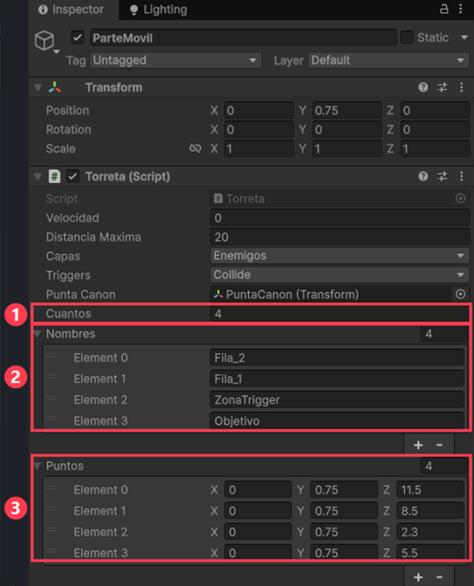
Play, apuntando a la fila: Cuantos 4.
Con Triggers en Ignore: 3. El orden de la lista puede salir revuelto
Con Triggers en Ignore: 3. El orden de la lista puede salir revuelto
Paso 15 · RaycastAll (4 de 5)
Renderer render = hits[i].collider.GetComponent<Renderer>();
if (render != null)
{
render.material.color = Color.red;
}Dentro del for, debajo de puntos[i] = hits[i].point;
Paso 15 · RaycastAll (5 de 5)
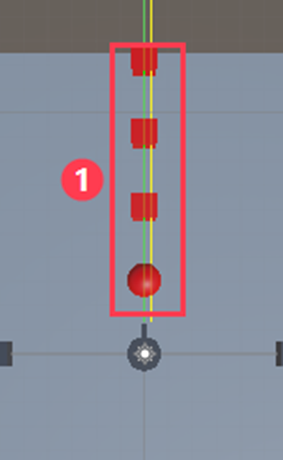
Play: todo lo que atraviesa el rayo se pone rojo
Parte 2
Un enemigo que ve y recibe golpes
Paso 16 · Una escena nueva
File > Save As… en Clase11/Escenas:
Clase11_Enemigo
Clase11_Enemigo
Borren la Torreta, la ZonaTrigger y todos los cubos. Quedan cámara, luz y Piso
Paso 17 · El jugador
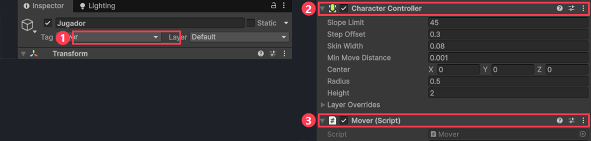
3D Object > Capsule. Nombre Jugador, Position 0, 1, -4, Tag Player.
Quiten su Capsule Collider y agreguen un Character Controller
Quiten su Capsule Collider y agreguen un Character Controller
Paso 17 · Moverlo
using UnityEngine;
public class Mover : MonoBehaviour
{
public float velocidad = 5f;
private CharacterController controlador;
void Start()
{
controlador = GetComponent<CharacterController>();
}
void Update()
{
float x = Input.GetAxisRaw("Horizontal");
float z = Input.GetAxisRaw("Vertical");
Vector3 direccion = new Vector3(x, 0f, z).normalized;
if (direccion != Vector3.zero)
{
controlador.Move(direccion * velocidad * Time.deltaTime);
transform.forward = direccion;
}
}
}Paso 17 · Probarlo
Arrastren Mover al Jugador.
Play: camina con WASD
Play: camina con WASD
Paso 18 · El enemigo
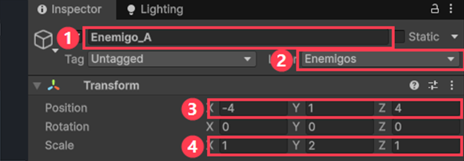
3D Object > Cube. Nombre Enemigo_A, Position -4, 1, 4, Scale 1, 2, 1,
Layer Enemigos. Material: MatObjetivo
Layer Enemigos. Material: MatObjetivo
Paso 18 · La dirección hacia el jugador
using UnityEngine;
public class Vigia : MonoBehaviour
{
public Transform jugador;
void Update()
{
Vector3 direccion = jugador.position - transform.position;
Debug.DrawRay(transform.position, direccion, Color.yellow);
}
}Dirección = destino menos origen
Paso 18 · Conectar al jugador
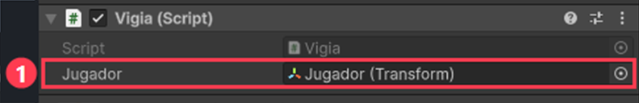
Script Vigia en Enemigo_A.
Arrastren el Jugador a su campo Jugador
Arrastren el Jugador a su campo Jugador
Paso 18 · La línea
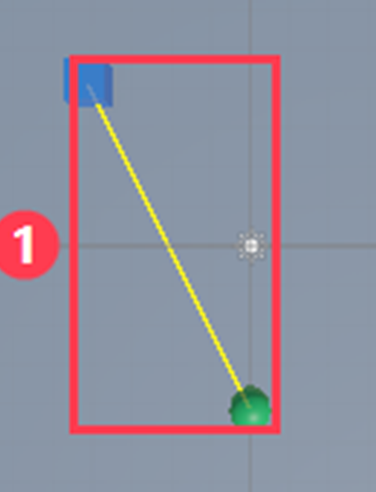
Play, pestaña Scene: la línea sigue al jugador cuando camina
Paso 19 · ¿Ve al jugador? (1 de 2)
public float alcance = 12f;
public bool veAlJugador;
public string loPrimeroQueVe;Arriba, debajo de public Transform jugador;
Paso 19 · ¿Ve al jugador? (2 de 2)
Vector3 direccion = jugador.position - transform.position;
RaycastHit hit;
veAlJugador = false;
loPrimeroQueVe = "";
if (Physics.Raycast(transform.position, direccion.normalized, out hit, alcance) == true)
{
loPrimeroQueVe = hit.collider.name;
if (hit.collider.CompareTag("Player") == true)
{
veAlJugador = true;
}
}
if (veAlJugador == true)
{
Debug.DrawRay(transform.position, direccion, Color.green);
}
else
{
Debug.DrawRay(transform.position, direccion, Color.red);
}Reemplaza lo que había dentro de Update
Paso 19 · Probarlo
Play y seleccionen Enemigo_A:
Ve Al Jugador marcado, Lo Primero Que Ve: Jugador.
Línea verde
Ve Al Jugador marcado, Lo Primero Que Ve: Jugador.
Línea verde
Paso 20 · Cambiar de color
// 1) Arriba, con las otras variables
private Renderer render;
private Color colorOriginal;
// 2) Un método nuevo, antes de Update
void Start()
{
render = GetComponent<Renderer>();
colorOriginal = render.material.color;
}
// 3) En el if final, antes del DrawRay verde
render.material.color = Color.red;
// 4) En el else, antes del DrawRay rojo
render.material.color = colorOriginal;Paso 21 · Una pared y otro enemigo
3D Object > Cube. Nombre Pared, Position 3, 1, 0, Scale 4, 2, 0.5.
Ctrl+D sobre Enemigo_A: Enemigo_B en 4, 1, 4
Ctrl+D sobre Enemigo_A: Enemigo_B en 4, 1, 4
Paso 21 · Probarlo
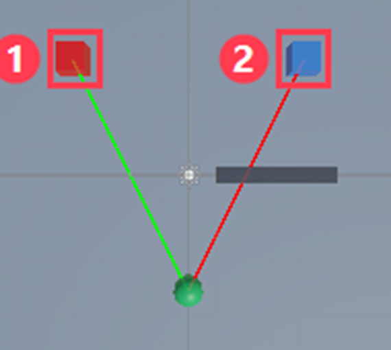
Play: 1 ve al jugador (rojo, línea verde).
2 tiene la pared en medio (azul, línea roja)
2 tiene la pared en medio (azul, línea roja)
Paso 21 · Qué ve cada uno
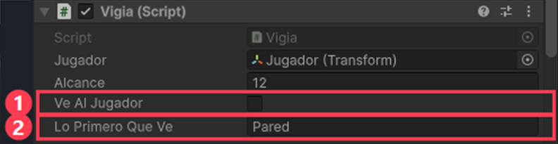
Enemigo_B: Ve Al Jugador apagado.
Lo Primero Que Ve: Pared
Lo Primero Que Ve: Pared
Paso 22 · La salud
using UnityEngine;
public class Salud : MonoBehaviour
{
public int vida = 3;
public void RecibirDanio(int cantidad)
{
vida = vida - cantidad;
if (vida <= 0)
{
Destroy(gameObject);
}
}
}Script Salud en Enemigo_A y en Enemigo_B
Paso 22 · Vida 3
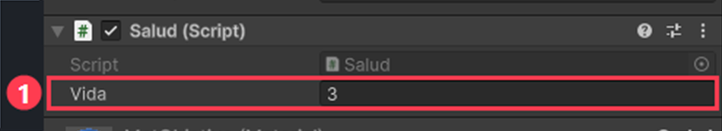
Cada enemigo con Salud y Vida 3
Paso 22 · Golpear (1 de 2)
using UnityEngine;
public class Golpear : MonoBehaviour
{
public float alcance = 2.5f;
public LayerMask capas;
public int danio = 1;
void Update()
{
Debug.DrawRay(transform.position, transform.forward * alcance, Color.cyan);
if (Input.GetKeyDown(KeyCode.Space) == true)
{
Pegar();
}
}El método Pegar va debajo, en el siguiente paso
Paso 22 · Golpear (2 de 2)
void Pegar()
{
RaycastHit hit;
if (Physics.Raycast(transform.position, transform.forward, out hit, alcance, capas) == true)
{
Salud salud = hit.collider.GetComponent<Salud>();
if (salud != null)
{
salud.RecibirDanio(danio);
}
}
}Debajo de Update, dentro de la clase
Paso 22 · Ponerlo en el jugador
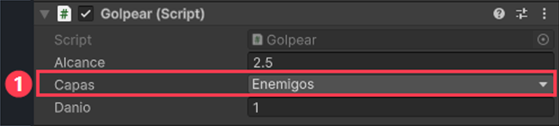
Script Golpear en el Jugador.
Capas: solo Enemigos
Capas: solo Enemigos
Paso 22 · Probarlo
Play: acérquense a un enemigo y pulsen Espacio.
Tres golpes y desaparece
Tres golpes y desaparece
Si no pasa nada: ¿Capas en Enemigos? ¿La línea cian toca al enemigo?
Parte 3
Disparar en primera persona
Paso 23 · Una escena nueva
File > Save As… en Clase11/Escenas:
Clase11_Disparo
Clase11_Disparo
Quiten Mover y Golpear del Jugador, y Vigia de los dos enemigos. Salud se queda
Paso 23 · Un enemigo al frente
Enemigo_A: Position 0, 1, 6
Paso 24 · La cámara en la cabeza
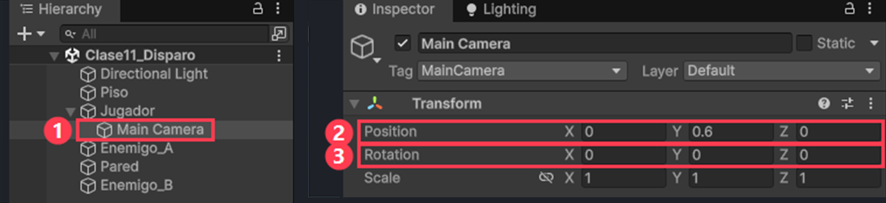
1 Arrastren Main Camera sobre Jugador.
2 Position 0, 0.6, 0. 3 Rotation 0, 0, 0
2 Position 0, 0.6, 0. 3 Rotation 0, 0, 0
Paso 24 · Sin cuerpo
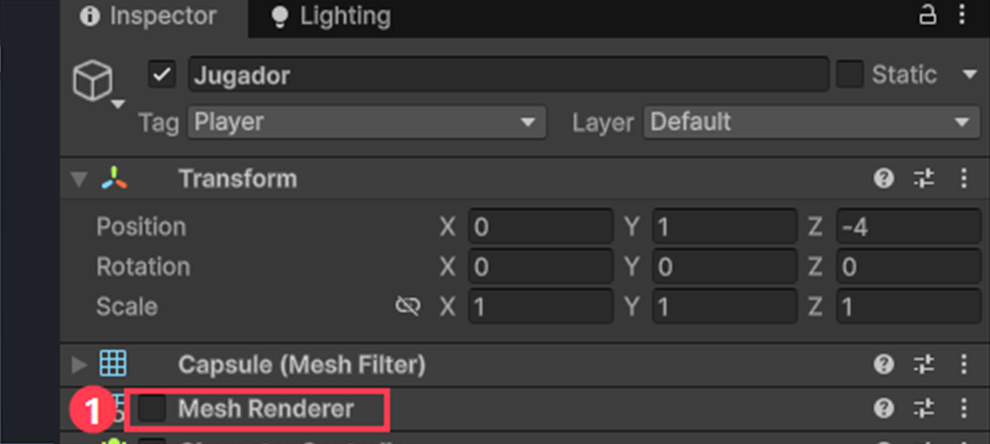
En el Jugador, quiten el visto del Mesh Renderer
Paso 25 · Mirar (1 de 3)
using UnityEngine;
public class Mirar : MonoBehaviour
{
public float sensibilidad = 2f;
public Transform camara;
private float giroVertical;
void Start()
{
Cursor.lockState = CursorLockMode.Locked;
}Script Mirar. Update va debajo
Paso 25 · Mirar (2 de 3)
void Update()
{
float mouseX = Input.GetAxis("Mouse X") * sensibilidad;
float mouseY = Input.GetAxis("Mouse Y") * sensibilidad;
transform.Rotate(0f, mouseX, 0f);Debajo de Start, dentro de la clase. Aún no cierren Update
Paso 25 · Mirar (3 de 3)
giroVertical = giroVertical - mouseY;
giroVertical = Mathf.Clamp(giroVertical, -80f, 80f);
camara.localRotation = Quaternion.Euler(giroVertical, 0f, 0f);
}
}Sigue dentro de Update. Ahora sí se cierran Update y la clase
Paso 26 · Moverse (MoverFPS)
using UnityEngine;
public class MoverFPS : MonoBehaviour
{
public float velocidad = 5f;
private CharacterController controlador;
void Start()
{
controlador = GetComponent<CharacterController>();
}
void Update()
{
float x = Input.GetAxisRaw("Horizontal");
float z = Input.GetAxisRaw("Vertical");
Vector3 movimiento = transform.right * x + transform.forward * z;
controlador.Move(movimiento.normalized * velocidad * Time.deltaTime);
}
}Paso 26 · Ponerlos en el Jugador
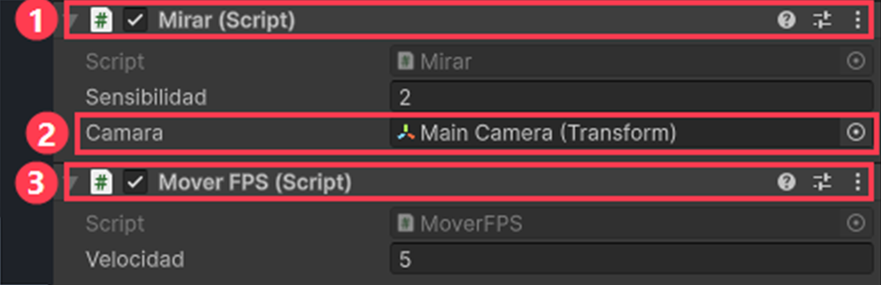
1 3 Mirar y MoverFPS en el Jugador.
2 Campo Camara: arrastren Main Camera
2 Campo Camara: arrastren Main Camera
Paso 26 · Probarlo
Play: el mouse mira,
WASD camina hacia donde miras
WASD camina hacia donde miras
Escape suelta el cursor
Paso 27 · La idea
El rayo sale de la cámara:
origen transform.position
dirección transform.forward
origen transform.position
dirección transform.forward
Por eso la Pistola va en la Main Camera
Paso 27 · Pistola (1 de 3)
using UnityEngine;
public class Pistola : MonoBehaviour
{
public int danio = 1;
public float alcance = 50f;
void Update()
{
if (Input.GetButtonDown("Fire1") == true)
{
Disparar();
}
}Script Pistola. Disparar va debajo
Paso 27 · Pistola (2 de 3)
void Disparar()
{
Ray rayo = new Ray(transform.position, transform.forward);
RaycastHit hit;
if (Physics.Raycast(rayo, out hit, alcance) == true)
{
Salud salud = hit.collider.GetComponent<Salud>();
if (salud != null)
{
salud.RecibirDanio(danio);
}
}
}Debajo de Update, dentro de la clase
Paso 27 · Pistola (3 de 3)
void OnGUI()
{
GUI.Label(new Rect(Screen.width / 2 - 3, Screen.height / 2 - 10, 30, 30), "+");
}
}La mira: un + en el centro de la pantalla
Paso 27 · Ponerla en la cámara
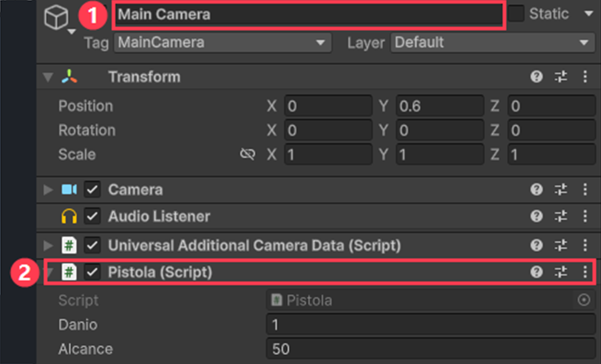
1 Seleccionen Main Camera.
2 Arrastren Pistola ahí, no al Jugador
2 Arrastren Pistola ahí, no al Jugador
Paso 27 · Probarlo
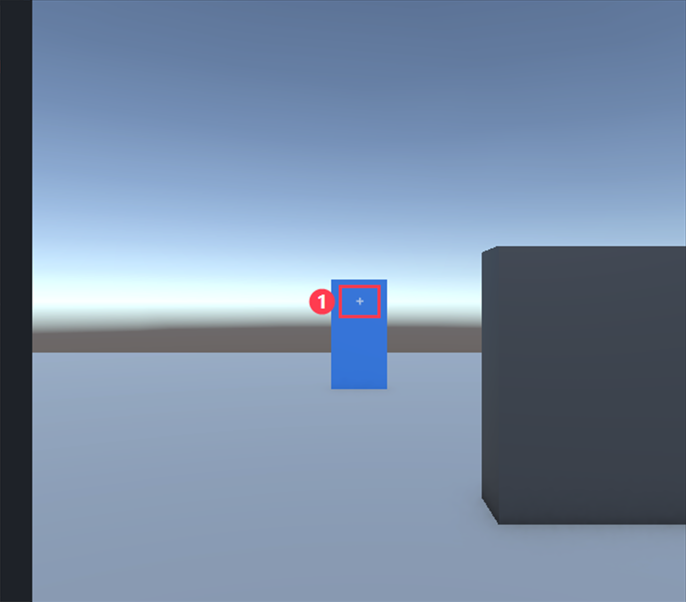
Play: pongan la mira sobre Enemigo_A y hagan clic
Paso 27 · La vida baja
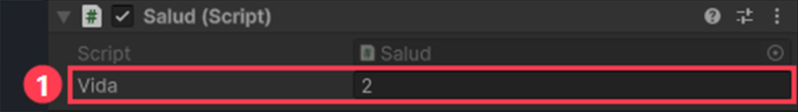
Cada clic: Vida baja 1
Paso 27 · Tres disparos
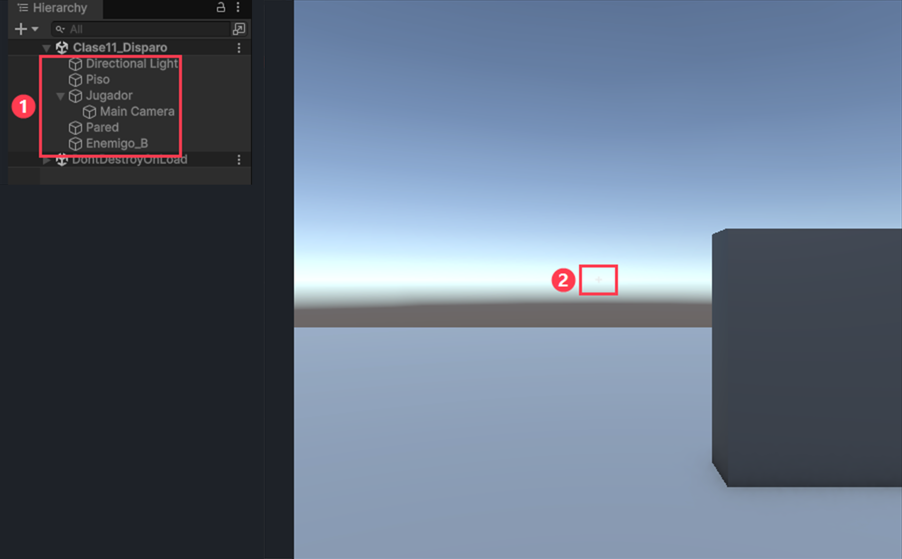
Al tercero, desaparece
Esto es hitscan
El impacto es instantáneo: no hay una bala viajando. El proyectil lo vemos más adelante
Paso 28 · Mantener el clic
// 1) Arriba, con las otras variables
public float cadencia = 0.3f;
private float proximoDisparo;
// 2) El if de Update queda así
if (Input.GetButton("Fire1") == true && Time.time >= proximoDisparo)
{
proximoDisparo = Time.time + cadencia;
Disparar();
}Paso 28 · Time.time
Time.time: segundos desde que empezó Play.
Disparo en 5: proximoDisparo = 5.3.
Hasta llegar a 5.3, no dispara
Disparo en 5: proximoDisparo = 5.3.
Hasta llegar a 5.3, no dispara
GetButtonDown: una vez por clic. GetButton: mientras se mantenga
Paso 28 · Probarlo
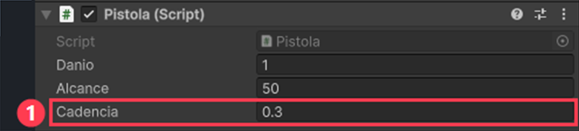
Play: mantengan el clic.
Un disparo cada Cadencia segundos
Un disparo cada Cadencia segundos
Paso 29 · La marca
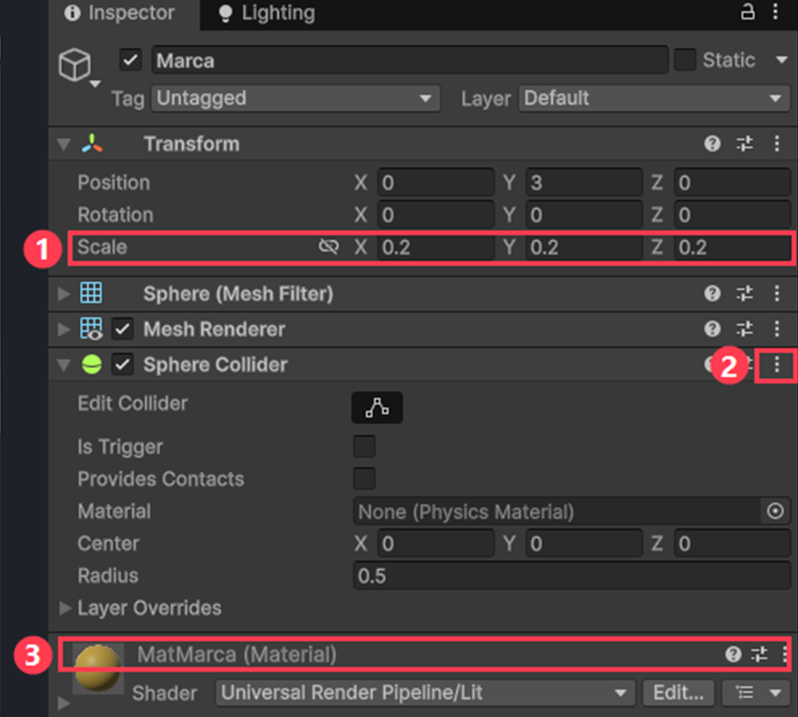
3D Object > Sphere. Nombre Marca.
1 Scale 0.2. 2 Quiten el Sphere Collider. 3 MatMarca F2C94C
1 Scale 0.2. 2 Quiten el Sphere Collider. 3 MatMarca F2C94C
Paso 29 · Sin collider
Con collider, el siguiente rayo
chocaría con la marca
y no con el enemigo
chocaría con la marca
y no con el enemigo
Paso 29 · El prefab
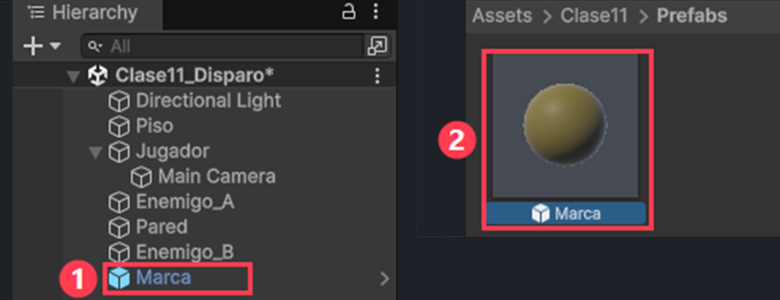
Carpeta Prefabs. Arrastren Marca 1 ahí 2.
Después, borren la Marca de la escena
Después, borren la Marca de la escena
Paso 29 · Dejar la marca
// 1) Arriba, con las otras variables
public GameObject marca;
// 2) En Disparar, dentro del if del Raycast, antes de buscar la Salud
GameObject copia = Instantiate(marca, hit.point, Quaternion.identity);
Destroy(copia, 2f);Paso 29 · Instantiate y Destroy
Instantiate(qué, dónde, cómo girado)
dónde: hit.point, donde pegó el rayo
Destroy(copia, 2f): se borra a los 2 segundos
dónde: hit.point, donde pegó el rayo
Destroy(copia, 2f): se borra a los 2 segundos
Paso 29 · Conectar el prefab
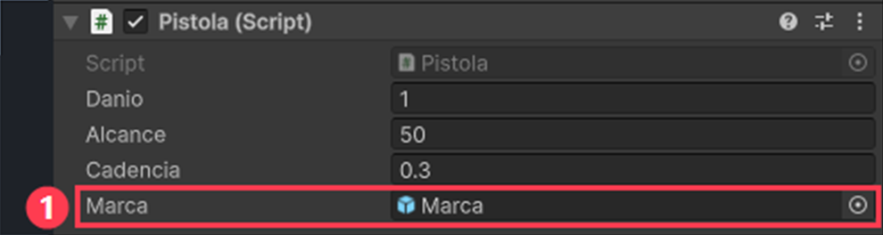
Arrastren el prefab Marca al campo Marca de la Pistola
Paso 29 · Probarlo
Play: cada disparo deja una marca donde pega
Si algo falla (1 de 2)
Archivo y clase con el mismo nombre.
Un campo vacío en el Inspector: NullReference.
Error de Input: Active Input Handling en Both
Un campo vacío en el Inspector: NullReference.
Error de Input: Active Input Handling en Both
La Console dice el archivo y la línea del error
Si algo falla (2 de 2)
El disparo no hace nada:
¿La Pistola está en la Main Camera?
¿El enemigo tiene Collider y Salud?
¿La marca sigue con collider?
¿La Pistola está en la Main Camera?
¿El enemigo tiene Collider y Salud?
¿La marca sigue con collider?
Debug.Log(hit.collider.name) dice con qué chocó el rayo
¿Qué aprendimos hoy?
origen, dirección y distancia máxima
objeto, punto y distancia
deciden qué rayos ven qué
un golpe de rayo corto
y un disparo hitscan desde la cámara
yo paso por los puestos
a revisar el avance de cada uno
¿Algo que no cuadró?
Nos vemos la próxima clase
Si me quieren agregar
Correo institucional:
jjardila@libertadores.edu.co